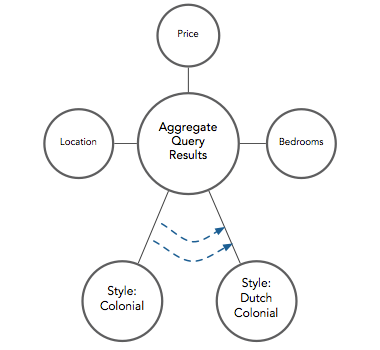

Search without The Discovery Engine
Suppose you are interested in purchasing a house on the “Findahouse.com” real estate site.* You want to find a three bedroom colonial, priced at $500,000, in Woodbury.
| 1 | Colonial | 3 Bedrooms | $500,000 | Woodbury |
A search for a three bedroom colonial priced at $500,000 in Woodbury might return this result.
Standard SQL-based Search
Both of these SQL-based searches limit the number of matches seen by the end user. The first returns only one match. The second returns only three matches. But Findahouse may have more than three houses in inventory that its customers might want to buy. By limiting search results, both of these SQL-based implementations prevent potential customers from seeing houses they might like. This prevents Findahouse from generating as much revenue as it should.
| 1 | Colonial | 3 Bedrooms | $460,000 | Woodbury |
| 2 | Colonial | 3 Bedrooms | $480,000 | Woodbury |
| 3 | Colonial | 3 Bedrooms | $500,000 | Woodbury |
A cleverer SQL-based search might accept a range for the price variable. If the price sought were changed to $460,000-$500,000, search results might look like this.
A product tour of Transparensee’s Discovery Engine, using real estate data as an example.
Search with The Discovery Engine
Findahouse could install Transparensee’s Discovery Engine, which would allow it to implement new kinds of search.
Topics and relationships within topics would need to be established before the Discovery Engine could launch. Topics that apply to real estate include price, number of bedrooms, location, and style of house.
Directional Fuzzy Search
With directional fuzzy search, Findahouse could show its customers the closest possible matches to their search query based on their directional preferences.
| 1 | Colonial | 3 Bedrooms | $500,000 | Woodbury |
| 2 | Colonial | 3 Bedrooms | $480,000 | Woodbury |
| 3 | Colonial | 3 Bedrooms | $460,000 | Woodbury |
| 4 | Dutch Colonial | 3 Bedrooms | $470,000 | Woodbury |
| 5 | Cape Cod | 3 Bedrooms | $450,000 | Woodbury |
| 6 | Colonial | 3 Bedrooms | $480,000 | Syosset |
| 7 | Dutch Colonial | 3 Bedrooms | $440,000 | Syosset |
| 8 | Colonial | 3 Bedrooms | $410,000 | Syosset |
Using the Discovery Engine, a search for a three bedroom colonial priced at $500,000 in Woodbury might return these results
It may know, for example, that the customer has a hard limit of $500,000 on price that they cannot go above. Thus, where price is concerned, Findahouse must perform a directional search that will look only at prices of $500,000 or below.
The first result is a perfect match. It would have come up as part of an SQL query and it is the first item to be shown by the Discovery Engine.
The second and third results are matches within every category but price. These would have come up in response to an SQL query that used a range for price.
The fourth and fifth results are inexact matches in two categories: style and price. The dutch colonial and cape cod are similar to colonials, but they’re not colonials. The prices are close to $500,000 but they’re not $500,000. In fact, house 5 falls outside the $460,000 – $500,000 range we established earlier and wouldn’t have come up in a range-based query.
Houses 6 — 8 are inexact across multiple dimensions. These houses are colonials or near-colonials in the nearby town of Syosset that sell for lower prices than houses in Woodbury. They aren’t perfect matches for our query, but they’re pretty good.
Houses 4-8 would not have been shown in a standard SQL-based query. But they are good choices that would pique the interest of this customer. Showing them with the Discovery Engine will cause customers to spend more time exploring the site and will increase the number of sales.
Pivot
In the example above, a customer looking for a $500,000, 3 bedroom colonial in Woodbury found a couple of good matches. But the Discovery Engine also showed them that there are lower priced houses in Woodbury in slightly different styles and that there are lower priced colonials in the nearby town of Syosset. They would never have known either of these things if they had used a standard search.
Now that he knows these things, the customer may now decide to pivot his search around either the location or style node in order to find more good matches and explore the dataset further. Suppose he chooses to pivot around the style node. Leaving all other query parameters the same, he changes the style of home he is looking for from “Colonial” to “Dutch Colonial”.

Pivoting Query Results Around Style Node
| 1 | Colonial | 3 Bedrooms | $500,000 | Woodbury |
| 2 | Colonial | 3 Bedrooms | $480,000 | Woodbury |
| 3 | Colonial | 3 Bedrooms | $460,000 | Woodbury |
| 4 | Dutch Colonial | 3 Bedrooms | $470,000 | Woodbury |
| 5 | Cape Cod | 3 Bedrooms | $450,000 | Woodbury |
| 6 | Colonial | 3 Bedrooms | $480,000 | Syosset |
| 7 | Dutch Colonial | 3 Bedrooms | $440,000 | Syosset |
| 8 | Colonial | 3 Bedrooms | $410,000 | Syosset |
His search results might look like this after the pivot.
These results show him that there are many more Dutch Colonials in his price range than there are Colonials. If a Dutch Colonial is similar to a Colonial, this is very useful information.
The Discovery Engine shows people small ways to change their search parameters that can lead to vastly improved results. By pivoting around crucial data points revealed by the Discovery Engine, customers can learn which areas of the dataset are most likely to provide them with the best matches.
Bi-Directional Fuzzy Search
By pivoting around a point in the dataset, the customer has discovered that the average Dutch Colonial costs about $70,000 less than the average Colonial. Realizing that he may get more value for his money than he expected, he now decides that it is worthwhile to look at both more expensive and less expensive Dutch Colonials in Woodbury. He removes the $500,000 price limit, making the search along that dimension bi-directional.
By opening up the search a bit, he discovers that there are several four bedroom Dutch Colonial houses priced just above $500,000. This represents a value that he didn’t expect to find. But it’s near his price range and may be more worthwhile than going with a slightly smaller house in a different style.
| 1 | Dutch Colonial | 3 Bedrooms | $470,000 | Woodbury |
| 2 | Dutch Colonial | 3 Bedrooms | $440,000 | Woodbury |
| 3 | Dutch Colonial | 3 Bedrooms | $420,000 | Woodbury |
| 4 | Dutch Colonial | 3 Bedrooms | $510,000 | Woodbury |
| 5 | Dutch Colonial | 3 Bedrooms | $520,000 | Woodbury |
| 6 | Dutch Colonial | 3 Bedrooms | $410,000 | Woodbury |
| 7 | Dutch Colonial | 3 Bedrooms | $540,000 | Woodbury |
| 8 | Colonial | 3 Bedrooms | $500,000 | Woodbury |
His search results would now look like this.
A bi-directional fuzzy search opens up even more possibilities than a directional fuzzy search. Once users have a good sense for what they want, they may choose to make their search bi-directional in order to discover additional similar items.
“Similar to” search
Our customer decides that he’s interested in the four bedroom Dutch Colonial selling for $510,000 (house 4 in image x, above). He clicks the link to see the full specification.
Notice the column labeled “Most Similar Houses”. When this page was pulled up, a query was sent to the Discovery Engine asking for the ten houses most similar to this one across all categories. These ten houses are those most similar to 10 Peachtree Lane in every respect.
If we select “Details” we can see the attributes of these houses.
| Address | Style | Bedrm | Bthrm | Price | Location | Acres | Year | Garage | Amenities |
|---|---|---|---|---|---|---|---|---|---|
| 10 Peachtree Lane | Dutch Colonial | 4 | 5 | 510k | Woodbury | .75 | 1940 | 3 car | Pl, Dck, Fplc |
| 5 Apple Court | Dutch Colonial | 4 | 4 | 520k | Woodbury | .75 | 1970 | 2 car | Dck, Fplc |
| 26 Orchard Drive | Dutch Colonial | 4 | 4 | 540k | Woodbury | .75 | 1980 | 2 car | Pl, Fplc |
| 3 Orange Lane | Dutch Colonial | 4 | 5 | 570k | Woodbury | .8 | 1990 | 3 car | Pl, Dck, Fplc |
| 47 Pear Place | Dutch Colonial | 4 | 4 | 570k | Woodbury | 1 | 1970 | 3 car | Pl, Fplc |
| 9 Lemon Lane | Split Level | 4 | 5 | 540k | Woodbury | 1 | 1980 | 3 car | Dck, Fplc |
| 132 Mango Street | Colonial | 4 | 4 | 510k | Syosset | .8 | 1960 | 2 car | Pl, Dck, Fplc |
| 112 Orange Lane | Cape Cod | 4 | 5 | 480k | Huntington | .5 | 1950 | 3 car | Dck |
| 2 Pear Place | Dutch Colonial | 4 | 5 | 470k | Farmingdale | .5 | 1950 | 3 car | Dck, Fplc |
| 83 Apple Court | Dutch Colonial | 4 | 5 | 580k | Woodbury | 1 | 1980 | 3 car | Pl, Dck, Fplc |
| 44 Peachtree Lane | Dutch Colonial | 4 | 5 | 610k | Woodbury | 1.2 | 1990 | 3 car | Pl, Dck, Fplc |
The houses are ordered in terms of how similar they are to 10 Peachtree Lane across all eight categories.
The Discovery Engine weighs and balances the topics within each dimension of a house’s profile. As we move down the list we go from houses that are highly similar to 10 Peachtree Lane across all categories to houses that are more and more different across multiple categories.
The Discovery Engine can show customers substitutes for the item they are looking at. It does this automatically, without requiring thought from customers.
Weighting Search Results
The customer may decide that some topics are more important than others. If so, he can give more weight to those topics. His search results will reflect this new weighting.
| 6% | Dutch Colonial | 4 | 5 | 510k | Woodbury | .75 | 1940 | 3 car | Pl, Dck, Fplc |
| 6% | Dutch Colonial | 4 | 4 | 520k | Woodbury | .75 | 1970 | 2 car | Dck, Fplc |
| 2% | Dutch Colonial | 4 | 4 | 540k | Woodbury | .75 | 1980 | 2 car | Pl, Fplc |
| 2% | Dutch Colonial | 4 | 5 | 570k | Woodbury | .8 | 1990 | 3 car | Pl, Dck, Fplc |
| 6% | Dutch Colonial | 4 | 4 | 570k | Woodbury | 1 | 1970 | 3 car | Pl, Fplc |
| 2% | Dutch Colonial | 4 | 5 | 470k | Farmingdale | .5 | 1950 | 3 car | Dck, Fplc |
| 2% | Split Level | 4 | 5 | 540k | Woodbury | 1 | 1980 | 3 car | Dck, Fplc |
| 2% | Dutch Colonial | 4 | 5 | 580k | Woodbury | 1 | 1980 | 3 car | Pl, Dck, Fplc |
| 6% | Dutch Colonial | 4 | 5 | 610k | Woodbury | 1.2 | 1990 | 3 car | Pl, Dck, Fplc |
| 6% | Colonial | 4 | 4 | 570k | Woodbury | .75 | 1970 | 3 car | |
| 2% | Cape Cod | 4 | 4 | 510k | Syosset | .8 | 1960 | 2 car | Pl, Dck, Fplc |
| 6% | Cape Cod | 4 | 5 | 480k | Huntington | .5 | 1950 | 3 car | Dck |
Suppose our customer decides to weight Style and Location more heavily than other topics. If he looks at the houses most similar to 10 Peachtree Lane his list would now look like this.
The order of the results has changed. Dutch Colonials and houses in Woodbury are now higher on the list, even though some of these houses are quite different from 10 Peachtree Lane in other ways. 21 Grape Drive, which was not on our previous list of similar houses, is now displayed. Even though it lacks many of the amenities of 10 Peachtree lane, it is a Dutch Colonial in Woodbury and, with our new weightings, that is now enough to make up for its other deficiencies.
Users can tell the Discovery Engine which qualities they see as important. Search results can then be tailored to users based on their individual preferences.
Combining Push with Pull
A company may have certain items — or certain kinds of items — that they prefer to sell over others. These are items that the company wants to push.
Standard search is about pull. Users describe what they want and a search engine serves up what they asked for.
The Discovery Engine can combine push with pull. Search results can be combined with a hidden list of topics, qualities or results that a company wants to push, resulting in a list of good search results in which the items shown are slanted a little bit towards those that the company is pushing.
The real estate company in the above examples may receive different commissions on different houses, for example, depending on where the listing came from. Suppose the commission schedule on the list in Section V, above, was as follows:
The company may want to push the homes it receives a higher commission on to a higher place on the results list.
| 6% | Dutch Colonial | 4 | 5 | 510k | Woodbury | .75 | 1940 | 3 car | Pl, Dck, Fplc |
| 6% | Dutch Colonial | 4 | 4 | 520k | Woodbury | .75 | 1970 | 2 car | Dck, Fplc |
| 2% | Dutch Colonial | 4 | 4 | 540k | Woodbury | .75 | 1980 | 2 car | Pl, Fplc |
| 6% | Dutch Colonial | 4 | 4 | 570k | Woodbury | 1 | 1970 | 3 car | Pl, Fplc |
| 2% | Dutch Colonial | 4 | 5 | 570k | Woodbury | .8 | 1990 | 3 car | Pl, Dck, Fplc |
| 6% | Dutch Colonial | 4 | 5 | 610k | Woodbury | 1.2 | 1990 | 3 car | Pl, Dck, Fplc |
| 2% | Dutch Colonial | 4 | 5 | 470k | Farmingdale | .5 | 1950 | 3 car | Dck, Fplc |
| 6% | Colonial | 4 | 4 | 570k | Woodbury | .75 | 1970 | 3 car | |
| 2% | Split Level | 4 | 5 | 540k | Woodbury | 1 | 1980 | 3 car | Dck, Fplc |
| 2% | Dutch Colonial | 4 | 5 | 580k | Woodbury | 1 | 1980 | 3 car | Pl, Dck, Fplc |
| 6% | Cape Cod | 4 | 5 | 480k | Huntington | .5 | 1950 | 3 car | Dck |
| 2% | Cape Cod | 4 | 4 | 510k | Syosset | .8 | 1960 | 2 car | Pl, Dck, Fplc |
If they decide to do this, the new list might look like this.
The results are still great. They still appear to be ordered roughly in order of similarity to 10 Peachtree Lane. But houses with a 6% commission have been placed slightly higher up the list. The change is so subtle that the average user won’t notice it. But by showing customers high-commission houses before low-commission houses, the real estate company will sell more high-commission houses and increase their profits.
The Discovery Engine can influence search results in a subtle way. Users won’t notice, but results can be manipulated so that revenues increase.